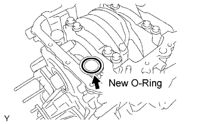
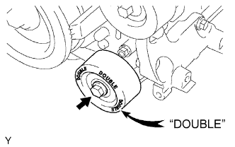
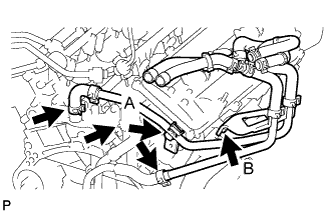
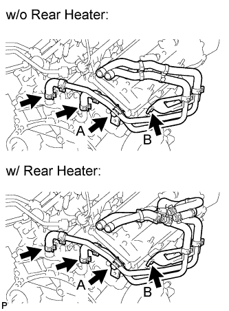
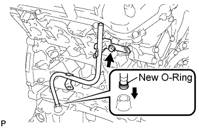
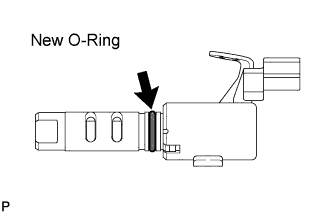
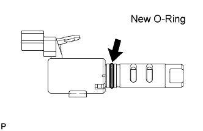

CYLINDER HEAD GASKET > INSTALLATION |
| 1. INSTALL NO. 2 CYLINDER HEAD GASKET |
Remove any old packing (FIPG) material and be careful not to drop any oil on the contact surfaces of the cylinder head and cylinder block.
 |
Apply seal packing to a new cylinder head gasket as shown in the illustration.
| Item | Specified Condition |
| A | 10 to 15 mm (0.394 to 0.591 in.) |
| B | 1.25 to 1.5 mm (0.0492 to 0.0591 in.) |
 |
Place the cylinder head gasket on the cylinder block surface with the front face of the Lot No. stamp upward.
| 2. INSTALL CYLINDER HEAD SUB-ASSEMBLY LH |
Place the cylinder head on the cylinder head gasket.
Install the 8 cylinder head bolts and plate washers.
Apply a light coat of engine oil to the threads and under the heads of the cylinder head bolts.
Install the plate washers to the cylinder head bolts.
Step 1:
 |
Using a 10 mm bi-hexagon wrench, install and uniformly tighten the 8 cylinder head bolts with plate washers in several steps in the sequence shown in the illustration.
Step 2:
 |
Mark the cylinder head bolt heads with paint as shown in the illustration.
Tighten the cylinder head bolts 180° in the sequence shown in step 1.
Check that the painted marks are now facing rearward.
 |
Install the 2 bolts in the order shown in the illustration.
Apply a light coat of engine oil to the threads of the cylinder head bolts.
Install the 2 cylinder head bolts. Using several steps, tighten the bolts uniformly in the sequence shown in the illustration.
 |
Seal packing will seep out from the front side of the engine. Thoroughly wipe off seal packing that seeps out.
| 3. INSTALL NO. 3 CAMSHAFT AND NO. 4 CAMSHAFT |
 |
Set the crankshaft position.
Install the crankshaft pulley set bolt, turn the crankshaft, and set the crankshaft set key into the left horizontal position.
Apply a light coat of engine oil to the thrust portions and journals of the camshafts.
 |
Place the 2 camshafts onto the cylinder head with the cam lobes of the No. 2 cylinder facing each direction as shown in the illustration.
Apply a light coat of engine oil to the 8 bearing caps.
 |
Set the 8 bearing caps in their proper locations.
Apply a light coat of engine oil to the threads and under the heads of the 16 bearing cap bolts.
 |
Uniformly install the 16 bearing cap bolts in several steps in the order shown in the illustration.
| 4. INSTALL NO. 3 CHAIN TENSIONER ASSEMBLY |
 |
While pushing in the tensioner, insert a pin of φ1.0 mm (0.0394 in.) into the hole to fix the tensioner in place.
 |
Install the No. 3 chain tensioner with the bolt.
| 5. INSTALL CYLINDER HEAD GASKET |
Remove any old packing (FIPG) material and be careful not to drop any oil on the contact surfaces of the cylinder head and cylinder block.
 |
Apply seal packing to a new cylinder head gasket as shown in the illustration.
| Item | Specified Condition |
| A | 10 to 15 mm (0.394 to 0.591 in.) |
| B | 1.25 to 1.5 mm (0.0492 to 0.0591 in.) |
 |
Place the cylinder head gasket on the cylinder block surface with the front face of the Lot No. stamp upward.
| 6. INSTALL CYLINDER HEAD SUB-ASSEMBLY RH |
Place the cylinder head on the cylinder head gasket.
Install the 8 cylinder head bolts and plate washers.
Apply a light coat of engine oil to the threads and under the heads of the cylinder head bolts.
Install the plate washers to the cylinder head bolts.
Step 1:
 |
Using a 10 mm bi-hexagon wrench, install and uniformly tighten the 8 cylinder head bolts with plate washers in several steps in the sequence shown in the illustration.
Step 2:
|
Mark the cylinder head bolt heads with paint as shown in the illustration.
Tighten the cylinder head bolts 180° in the sequence shown in step 1.
Check that the painted marks are now facing rearward.
|
Seal packing will seep out from the front side of engine. Thoroughly wipe off the seal packing that seeps out.
| 7. INSTALL NO. 1 CAMSHAFT BEARING |
 |
Align the bearing claw with the claw groove of the bearing cap, and push in the No. 1 camshaft bearing.
| 8. INSTALL NO. 2 CAMSHAFT BEARING |
 |
Install the No. 2 camshaft bearing to the cylinder head.
| 9. INSTALL NO. 1 CAMSHAFT AND NO. 2 CAMSHAFT |
|
Set the crankshaft position.
Using the crankshaft pulley set bolt, turn the crankshaft, and set the crankshaft set key into the left horizontal position.
Apply a light coat of engine oil to the thrust portions and journals of the camshafts.
 |
Place the 2 camshafts onto the cylinder head with the cam lobes of the No. 1 cylinder facing each direction as shown in the illustration.
Apply a light coat of engine oil to the 8 bearing caps.
 |
Set the 8 bearing caps in their proper locations.
Apply a light coat of engine oil to the threads and under the heads of the 16 bearing cap bolts.
 |
Uniformly install the 16 bearing cap bolts in several steps in the order shown in the illustration.
 |
Using a wrench, turn the camshafts clockwise until the camshaft knock pin is at a position 90° to the cylinder head.
| 10. INSTALL NO. 2 CHAIN TENSIONER ASSEMBLY |
 |
While pushing in the tensioner, insert a pin of φ1.0 mm (0.0394 in.) into the hole to fix the tensioner in place.
 |
Install the No. 2 chain tensioner with the bolt.
| 11. INSTALL CAMSHAFT TIMING GEARS AND NO. 2 CHAIN |
 |
Align the mark links (yellow) of the No. 2 chain with the timing marks (1-dot mark) of the camshaft timing gear and sprocket as shown in the illustration.
 |
Align the timing marks on the camshaft timing gear and sprocket with the timing marks on the bearing caps, and install the camshaft timing gear and sprocket with the No. 2 chain to the camshafts.
Temporarily install the camshaft timing gear set bolt and camshaft timing sprocket set bolt.
 |
Hold the hexagonal portion of the camshaft with a wrench, and tighten the 2 bolts.
Remove the pin from the No. 2 chain tensioner.
| 12. INSTALL NO. 1 CHAIN VIBRATION DAMPER |
 |
Install the No. 1 chain vibration damper with the 2 bolts.
| 13. INSTALL CHAIN TENSIONER SLIPPER |
| 14. INSTALL NO. 1 CHAIN TENSIONER ASSEMBLY |
 |
While turning the stopper plate of the tensioner clockwise, push in the plunger of the tensioner as shown in the illustration.
While turning the stopper plate of the tensioner counterclockwise, insert a bar of φ3.5 mm (0.138 in.) into the holes on the stopper plate and tensioner to fix the stopper plate in place.
Install the chain tensioner with the 2 bolts.
| 15. INSTALL NO. 1 CHAIN SUB-ASSEMBLY |
 |
Set the No. 1 cylinder to TDC/compression.
Align the timing marks of the camshaft timing gears and sprockets with the timing marks of the bearing caps.
 |
Install the crankshaft pulley set bolt, and turn the crankshaft to align the crankshaft set key with the timing line of the cylinder block.
 |
Align the mark link (yellow) with the timing mark of the crankshaft timing gear.
 |
Align the mark links (orange) with the timing marks of the camshaft timing gears, and install the No. 1 chain.
| 16. INSTALL NO. 2 CHAIN VIBRATION DAMPER |
 |
Install the 2 No. 2 chain vibration dampers.
| 17. INSTALL NO. 1 IDLE GEAR SHAFT |
Apply a light coat of engine oil to the rotating surface of the No. 1 idle gear shaft.
 |
Temporarily install the No. 1 idle gear shaft and No. 1 idle gear with the No. 2 idle gear shaft while aligning the knock pin of the No. 1 idle gear shaft with the knock pin groove of the cylinder block.
Using a 10 mm hexagon wrench, tighten the No. 2 idle gear shaft.
Remove the bar from the chain tensioner.
| 18. INSTALL FRONT CRANKSHAFT OIL SEAL |
 |
Using SST and a hammer, tap in a new oil seal until its surface is flush with the timing chain cover edge.
Apply MP grease to the lip of the oil seal.
| 19. INSTALL TIMING CHAIN COVER SUB-ASSEMBLY |
Remove any old packing (FIPG) material and be careful not to drop any oil on the contact surfaces of the timing chain cover, cylinder head and cylinder block.
 |
Install a new O-ring to the cylinder head for bank 2 as shown in the illustration.
 |
Apply seal packing as shown in the illustration.
Apply seal packing in a continuous line to the timing chain cover as shown in the illustration.

 |
Align the keyway of the oil pump drive rotor with the rectangular portion of the crankshaft timing gear, and slide the timing chain cover into place.
 |
Install the timing chain cover with the 24 bolts labeled A and B, and the 2 nuts. Tighten the bolts and nuts uniformly in several steps.
| Item | Quantity | Length |
| Bolt A | 9 | 25 mm (0.984 in.) |
| Bolt B | 15 | 55 mm (2.17 in.) |
| 20. INSTALL OIL FILTER BRACKET SUB-ASSEMBLY |
Set a new O-ring to the timing chain cover.
 |
Install the oil filter bracket with the 3 bolts and 2 nuts.
| 21. INSTALL WATER INLET HOUSING |
 |
Apply soapy water to a new O-ring, install it to the water outlet pipe.
Install a new O-ring to the water pump.
Install a new gasket to the water pump.
 |
Install the water inlet with the 5 bolts.
| 22. INSTALL OIL COOLER HOSE |
 |
Install the oil cooler hose.
| 23. INSTALL NO. 2 OIL COOLER HOSE |
Install the oil cooler hose.
| 24. INSTALL OIL PAN SUB-ASSEMBLY |
Remove any old packing (FIPG) material and be careful not to drop any oil on the contact surfaces of the cylinder block, rear oil seal retainer and oil pan.
 |
Install a new O-ring to the timing chain cover.
 |
Apply seal packing in a continuous line as shown in the illustration.
 |
Install the oil pan with the 17 bolts (A, B and C) and 2 nuts. Tighten the bolts and nuts uniformly in several steps.
| Item | Quantity | Length |
| A | 6 | 25 mm (0.984 in.) |
| B | 9 | 45 mm (1.77 in.) |
| C | 2 | 14 mm (0.551 in.) |
| 25. INSTALL OIL STRAINER SUB-ASSEMBLY |
 |
Install a new gasket and the oil strainer with the 2 nuts.
| 26. INSTALL NO. 2 OIL PAN SUB-ASSEMBLY |
 |
Apply seal packing in a continuous line as shown in the illustration.
 |
Install the No. 2 oil pan with the 10 bolts and 2 nuts. Tighten the bolts and nuts uniformly in several steps.
| 27. INSTALL CRANKSHAFT PULLEY |
 |
Using SST, install the crankshaft pulley with the pulley set bolt.
| 28. INSTALL NO. 1 IDLER PULLEY SUB-ASSEMBLY |
 |
Install the No. 1 idler pulley with the bolt.
| 29. INSTALL NO. 2 IDLER PULLEY SUB-ASSEMBLY |
 |
Install the 2 No. 2 idler pulleys and 2 cover plates with the 2 bolts.
| 30. INSTALL V-RIBBED BELT TENSIONER ASSEMBLY |
 |
Temporarily install the V-ribbed belt tensioner with the 5 bolts.
Tighten bolt 1 and 2 in numerical order.
Tighten the other bolts.
| Item | Length |
| A | 70 mm (2.76 in.) |
| B | 33 mm (1.30 in.) |
| 31. INSTALL OIL CONTROL VALVE FILTER |
 |
Install 2 new gaskets to 2 new unions.
Insert new filters to the unions.
Apply adhesive to 2 or 3 threads of the unions.
 |
Install the unions to the cylinder head LH and RH.
| 32. INSTALL REAR WATER BY-PASS JOINT |
Apply soapy water to a new O-ring.
 |
Install the O-ring to the water outlet pipe, and set 2 new gaskets to the water ports LH and RH.
 |
Install the rear water by-pass joint with the 2 bolts and 4 nuts.
Connect the engine coolant temperature sensor connector.
| 33. INSTALL WATER HOSE SUB-ASSEMBLY (for Automatic Transmission) |
 |
Temporarily install the heater water pipe, and then tighten the 2 bolts.
Connect the 3 water hoses.
| 34. INSTALL WATER HOSE SUB-ASSEMBLY (for Manual Transmission) |
 |
Temporarily install the heater water pipe, and then tighten the 2 bolts.
Connect the 2 water hoses.
| 35. INSTALL ENGINE OIL LEVEL DIPSTICK GUIDE |
 |
Install a new O-ring to the dipstick guide.
Apply a light coat of engine oil to the O-ring.
Push the dipstick guide end into the guide hole.
Install the dipstick guide with the bolt.
| 36. INSTALL CYLINDER HEAD COVER SUB-ASSEMBLY RH |
Remove any old packing (FIPG) material and be careful not to drop any oil on the contact surfaces of the cylinder head, timing chain cover and cylinder head cover.
 |
Apply seal packing as shown in the illustration.
Install a new gasket to the cylinder head cover.
Install the seal washers to the bolts.
 |
Temporarily install the cylinder head cover with the 10 bolts and 2 nuts. Tighten the bolts and nuts uniformly in several steps.
| 37. INSTALL CYLINDER HEAD COVER SUB-ASSEMBLY LH |
Remove any old packing (FIPG) material and be careful not to drop any oil on the contact surfaces of the cylinder head, timing chain cover and cylinder head cover.
 |
Apply seal packing as shown in the illustration.
Install a new gasket to the cylinder head cover.
Install the seal washers to the bolts.
 |
Temporarily install the cylinder head cover with the 10 bolts and 2 nuts. Tighten the bolts and nuts uniformly in several steps.
| 38. INSTALL CAMSHAFT TIMING OIL CONTROL VALVE ASSEMBLY LH |
 |
Apply a light coat of engine oil to a new O-ring and install it to the oil control valve.
 |
Install the oil control valve with the bolt.
Connect the oil control valve connector.
| 39. INSTALL CAMSHAFT TIMING OIL CONTROL VALVE ASSEMBLY RH |
 |
Apply a light coat of engine oil to a new O-ring and install it to the oil control valve.
 |
Install the oil control valve with the bolt.
Connect the camshaft timing oil control valve connector.
| 40. INSTALL VVT SENSOR (for Bank 2) |
 |
Apply a light coat of engine oil to the O-ring of the VVT sensor.
Install the VVT sensor with the bolt.
Connect the sensor connector.
| 41. INSTALL VVT SENSOR (for Bank 1) |
 |
Apply a light coat of engine oil to the O-ring of the sensor.
Install the sensor with the bolt.
Connect the sensor connector.
| 42. INSTALL SPARK PLUG |
Install the 6 spark plugs.
| 43. INSTALL IGNITION COIL ASSEMBLY |
 |
Install the 6 ignition coils with the 6 bolts.
Connect the 6 ignition coil connectors.
| 44. INSTALL ENGINE ASSEMBLY |
Install the engine assembly (Click here).